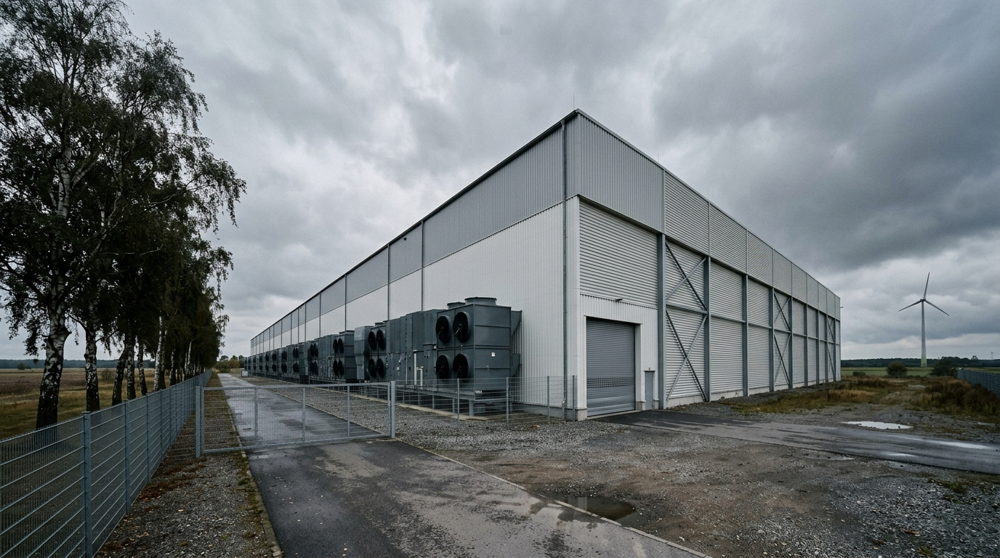
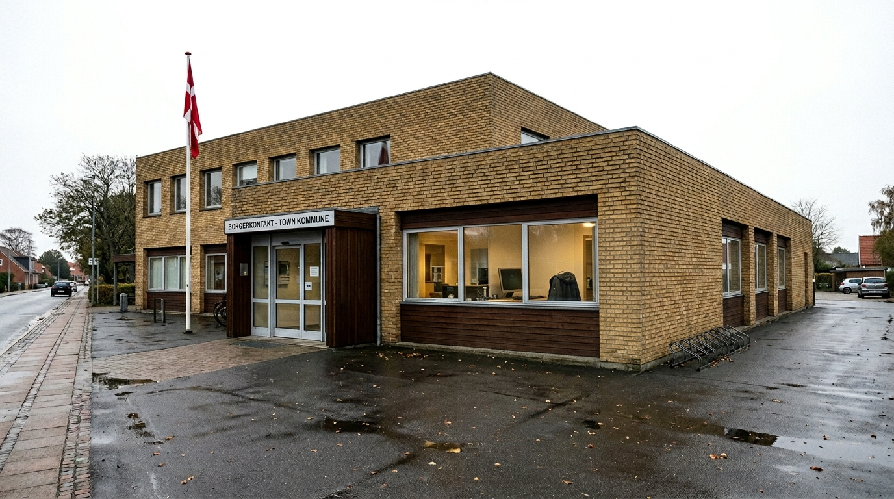

April 13, 2026.
Two governments made the same announcement on the same day. France’s DINUM declared it would begin migrating its own agents from Windows to Linux. Germany’s federal administration validated the operational launch of the Deutschland-Stack, a sovereign technology platform for the public sector. Neither government knew the other was going to move that week. The convergence was not coordinated.
That is the more important detail.
When governments move in parallel without coordination, they are not following a leader. They are responding to the same pressure. The pressure is structural: US tariff unpredictability, the CLOUD Act’s reach over American cloud providers, geopolitical instability that makes foreign-controlled infrastructure a strategic liability, and a domestic software ecosystem that has matured enough to absorb the transition costs.
By April 28, the Netherlands had launched its sovereign government Git platform. Denmark’s engineers had published a map of which municipal email systems run on US-controlled servers, and the International Criminal Court’s migration away from Microsoft had been confirmed. The month did not produce a single large announcement. It produced a stack of them.
France: The Architecture of Departure
The French move is the most technically detailed of the four.
DINUM’s interministerial seminar in April, attended by ANSSI, DGE, and DAE, announced a migration plan beginning with 234 of its own agents. The target operating system is not commercial Linux. DINUM built its own: two distributions on the NixOS base.
Sécurix is the hardened administrative OS: ANSSI-certified, with FIDO2 hardware keys, Secure Boot and TPM2 integration, and kernel hardening targeting the adversary models that ANSSI documents. It is the OS for civil servants who handle sensitive data. Bureautix is the NixOS-derived desktop workstation for general office use. Together they replace Windows at both the security-critical and productivity tiers.
The ambition does not stop at the operating system. DINUM is also planning to replace Active Directory (Microsoft’s directory service, the authentication backbone of most public-sector IT infrastructure in Europe) with a decentralized alternative. This is the part of the announcement that produced the most skepticism in the French technology press. Active Directory is not just software. It is twenty years of accumulated organizational dependency: permissions, policies, provisioning, and identity. Replacing it is a multi-year infrastructure project, not a switch.
The ministerial mandate extends beyond DINUM’s own estate. By autumn 2026, every French ministry must formalize its own dependency reduction plan across seven axes: workstations, collaborative tools, antivirus, AI systems, databases, virtualization, and network equipment. The mandate comes with a political statement from Digital Minister David Amiel: “L’État ne peut plus se contenter de constater sa dépendance, il doit en sortir. Nous devons nous désensibiliser des outils américains et reprendre le contrôle de notre destin numérique.”
In parallel, the CNAM (the French health insurance body, covering 80,000 agents) is migrating to Tchap (the sovereign messaging platform), Visio-Agents, and FranceTransfert. And the Health Data Hub, which manages France’s health data and currently runs on Microsoft Azure, has confirmed its migration to Scaleway, the French cloud provider. The target window is end of 2026 to early 2027. Scaleway now holds HDS certification and SecNumCloud trajectory status. Seven years ago, when the Health Data Hub was established, Scaleway was rejected as a hosting option because it lacked PaaS capacity. It has built that capacity.
The critics are not silent. cio-online published the “village gaulois” critique: France is building national forks of open-source software that are incompatible with equivalent German and Dutch projects. GendBuntu (Gendarmerie), Sécurix, LiMux (Munich), OpenDesk, Le Suite: all are sovereign, none are interoperable. CIGREF, the network of large French corporations, supports DINUM’s EuroStack initiative but shares the fragmentation concern.
The critique is fair. It is also, for the moment, a second-order problem. The first-order problem is the dependency. The fragmentation can be addressed by standardization later. Fragmentation among European stacks is better than unified dependency on American ones.
Germany: The Stack and the Merger
Germany’s April 13 announcement was quieter in tone but broader in scope.
The Deutschland-Stack is not a single product. It is a validated technology catalogue for the federal public sector covering document formats, file storage, messaging, authentication infrastructure, and development tools. Its most significant immediate mandate: ODF (the Open Document Format) is now required for all public sector document exchange. OOXML, Microsoft’s format, is out.
Italo Vignoli of The Document Foundation, the organization that maintains LibreOffice, called this the right framing: “L’ODF est le format de la souveraineté numérique… Il a été conçu pour un avenir où aucun fournisseur unique ne pourra contrôler le niveau documentaire de la civilisation.” The document format is infrastructure. When a format is controlled by one vendor, that vendor controls the terms of access to every document written in it. ODF removes that control.
Germany’s sovereign AI move came eleven days later. On April 24, Cohere, the Canadian enterprise AI company, announced plans to acquire Aleph Alpha, the German AI firm that had previously positioned itself as Europe’s sovereign LLM champion before pivoting away from large-scale model development in 2024. The deal has not yet closed and remains subject to regulatory approval. According to Handelsblatt, a term sheet values the combined entity at approximately $20 billion.
The deal’s strategic anchor is the Schwarz Group, the parent company of Lidl and Kaufland, which is investing €500 million ($600 million) in Cohere’s upcoming Series E round and committing the combined entity to run on STACKIT, the sovereign cloud platform operated by Schwarz Digits. STACKIT is already certified for German public sector workloads. In practical terms, Schwarz Group is acquiring a major enterprise customer for its cloud business at the same moment it is funding the AI merger. The combined company targets energy, defence, finance, telecom, health, and public sector customers in Europe, building on Aleph Alpha’s existing commercial relationships with the German ministry for digital affairs and the Baden-Württemberg regional government.
The deal did not happen in a vacuum. In February 2026, Canada and Germany signed a Sovereign Technology Alliance, a bilateral framework explicitly designed to “strengthen sovereign AI capacity and reduce strategic technology dependencies.” The Cohere–Aleph Alpha merger is the first major commercial expression of that alliance. Digital Minister Karsten Wildberger was direct about the reasoning: Europe needs a different path from the American one, built through partnership rather than platform dependency.
The sovereignty question attached to this deal is real and unresolved. Cohere is on a trajectory toward an IPO. When that happens, ownership passes to global shareholders with no particular allegiance to either Canada or Germany. CEO Aidan Gomez has said the merged entity will become “a Canadian-German company,” but a post-IPO ownership structure is difficult to hold to a nationality. European organisations considering this as a sovereignty alternative are betting on the cultural DNA of the entity rather than its ownership structure. That is a reasonable bet in 2026. Whether it holds in 2028 is the open question.
The honest bracket on Germany’s April: on April 28, Heise reported that German federal agencies are still “far from digital sovereignty” in practice, and that alternative software remains an exception rather than the rule. In Bavaria, the state finance ministry is actively seeking to renew its Microsoft contracts, drawing opposition from legislators who want a sovereignty-first approach instead. The Deutschland-Stack is a policy framework. It is not yet an operational reality for most of the German government.
This is the gap between declaration and deployment. France is in the same gap. So is everyone else.

Netherlands: The Open Code Principle
On April 28, the Dutch Ministry of Interior launched code.overheid.nl, a government Git platform built on Forgejo, a European open-source code hosting platform. The principle behind it is “Open, tenzij”: open by default, closed only when there is a documented reason for exception. Government code, government data, government software: publicly available, forkable, auditable.
The same week, the Open Cloud Alliantie, a coalition of seven Dutch IT companies including KPN, Centric, and Uniserver with combined annual revenue of €2.5 billion and over 13,000 IT professionals, presented its programme to parliament. The coalition’s goal: recapture 10 percent of government IT spending for Dutch providers over the next cycle. The stated motivation was not principally about cost. It was about resilience. The coalition’s statement: “We moeten er niet aan denken dat door internationale spanningen systemen in de toekomst simpelweg worden uitgezet.”
“We don’t want to think about international tensions simply causing systems to be shut off.”
Capgemini Research published simultaneously: 67 percent of Dutch companies now have a reindustrialisation strategy that includes sourcing. Ninety percent cite geopolitical tensions as a driver of local sourcing decisions. Against the aggregate figure of €285 billion flowing from European organisations to US IT suppliers every year, the Dutch numbers are a data point in a larger redistribution that is still mostly theoretical. But the direction is set.
Denmark: The Case That Made It Concrete
In the abstract, sovereignty risk is hard to visualise. In April, Denmark provided the concrete version.
On April 14, Ingeniøren/Version2 reported that Ishøj Kommune, a municipality of roughly 22,000 residents southwest of Copenhagen, had reduced its Microsoft 365 licence count so that only half of its employees still hold a full Microsoft licence. The other half (home helpers, SOSU workers, teachers, pedagogical assistants) have been migrated to open-source alternatives. The reasoning: light users do not need a full Microsoft suite. A different architecture costs less and creates less dependency.
On April 28, Version2 published a map.
The map shows which Danish municipalities route their email through servers under American corporate control: Microsoft and Google infrastructure subject to US law, including the CLOUD Act. The investigation, conducted by security firm CSIS, found that deep technical dependencies on American tech are the norm, not the exception. The IT directors quoted in the article trust their vendors. The experts quoted do not think trust is the right framework. What happened at the International Criminal Court in The Hague is the reason why.
Last year, the ICC became subject to US sanctions targeting its Chief Prosecutor. Microsoft informed the court that the sanctions required it to cut off the Prosecutor’s access to Microsoft services. If the ICC did not itself suspend the Prosecutor’s account, Microsoft stated it would shut down email services for the entire organisation. The ICC suspended the account. A court that adjudicates war crimes was operating under a de facto veto held by a commercial software vendor responding to the instructions of one government.
The ICC is now migrating to OpenDesk, the European open-source office suite developed through a German-Dutch collaborative. The announcement is expected in the coming weeks.
The Digitaliseringsstyrelsen, Denmark’s Agency for Digitisation, has published “Digital suverænitet i den offentlige sektor,” an analysis of sovereignty in public-sector digital infrastructure drawing on experience from home and abroad. The joint public digitalisation strategy 2026–2029 is in place. Denmark is not moving as fast as France or Germany. But it is asking the right questions in public, which is usually the step before moving.

The Honest Map
This update set out to cover all of Europe. It is honest about what it found.
The lead edge of the Great Return, in terms of active government decisions, announced programmes, and launched infrastructure, is a cluster of north-western European states. France, Germany, the Netherlands, and Denmark are moving. Switzerland is reducing its Microsoft dependency at the national level. The EU Parliament has published its own report on dangerous digital dependencies.
Poland is worth naming precisely because it is a counter-example. Poland signed substantial contracts with Palantir, the American company, for military and intelligence analytics in 2022 and 2023. Warsaw’s threat model is Russia, not America. From the Polish perspective, exposure to US law through the CLOUD Act is a tolerable risk compared to the alternative. American tech infrastructure is American security guarantees, and in Eastern Europe in 2026, that trade-off looks different than it does in Paris or Amsterdam. Poland’s digital choices are not a failure of sovereignty consciousness. They are a different strategic calculation made under different threat conditions.
Belgium is absent from this update for a specific institutional reason. Belgium hosts the European Commission, the Council, and the Parliament. Any Belgian federal decision about Microsoft creates an immediate precedent question for the EU bodies it hosts, and the Commission is not ready to answer that question. The result is a specific paralysis: Belgian IT policy cannot move visibly ahead of the institutional posture of the bodies it hosts, and those bodies are still forming that posture. It is not passivity. It is institutional entanglement.
Spain has a formal digital sovereignty programme (SEDIA, Red.es) but it is proceeding at the pace of compliance architecture rather than independence architecture. France is building tools. Spain is building reports. The output is the tell: DINUM publishes migration plans and operating system distributions; Spain publishes frameworks and roadmaps. Frameworks are not nothing. They are not Sécurix.
The Eastern flank requires a different frame entirely. Estonia has the most advanced digital government in Europe: X-Road, digital identity, e-residency, a working infrastructure that predates most European digitalisation discussions. But Estonia’s sovereignty concern is resilience and redundancy, not independence from American tech. The Baltic states, Poland, Romania: countries whose primary threat is physical and geopolitical, and whose digital strategy reflects that. They want more American presence, not less. The Great Return is a north-western European phenomenon because north-western Europe has the security latitude to trade American dependency for European alternatives. That latitude does not exist uniformly across the continent.
The absence of these countries from the active-migration category is not a reporting failure. It is a finding about the geography of pressure. The Great Return moves where the security dependence on America is low enough to be traded, and the domestic software ecosystem is mature enough to absorb the transition. Both conditions currently apply to France, Germany, the Netherlands, and Denmark. They do not yet apply uniformly elsewhere.
The demonstration effects from the north-western cluster are now available. Whether they propagate depends on political will in states where the conditions are approaching, and on the Commission eventually resolving the coordination problem it has so far declined to own.
The Tension That Will Determine Completion
The April announcements share a structural problem.
France is building Sécurix. Germany and the Netherlands are building OpenDesk. France is building Le Suite for collaborative tools. Germany has its own track through the Deutschland-Stack. These are not the same projects. They are parallel national responses to the same problem, built on overlapping open-source foundations but without shared governance, shared specifications, or shared deployment infrastructure.
This matters because sovereignty at national scale is insufficient for the organisations that operate across Europe. The European Court of Human Rights, the Europol network, the pan-European rail coordination infrastructure, the institutions of the EU itself: none of these are well served by five national sovereign stacks that cannot interoperate. The fragmentation critique (dismissed as a second-order problem above) is actually a first-order problem for European institutions and cross-border organisations.
There is an answer. The DINUM press noted that Le Suite is in dialogue with Dutch and German counterparts. OpenDesk is building on open standards that Le Suite also uses. The path to interoperability exists technically. Whether it will be taken politically depends on whether the European Commission treats open-source sovereignty stacks as a coordination problem it owns, or leaves each member state to solve independently.
Wero, the European payment initiative launched as a sovereignty alternative to Visa and Mastercard, is still running on Amazon Web Services. If the EU cannot enforce sovereignty-consistent infrastructure choices on its own flagship sovereignty projects, it will struggle to coordinate the national stacks that are now forming independently.
The pressure on European AI companies to accept American partnerships is the same problem in a different register. In April, Elon Musk’s xAI reportedly explored a three-way collaboration with France’s Mistral AI and Cursor. Mistral declined, partly because an American affiliation would undermine the sovereignty positioning that has become the commercial foundation of its revenue. Mistral’s February 2026 acquisition of Koyeb, a French cloud infrastructure company, is the alternative strategy: vertical integration, owning the stack from model to deployment, as a structural defence against exactly this kind of dependency. If Mistral stays independent, it is because sovereignty is profitable. If that changes, the European AI landscape looks very different very quickly.
What the Scorecard Says
Update #8 brought the prediction scorecard to 10 of 30, with the sovereignty-investment cascade moving from “forming” to “active.”
Two predictions close in April 2026.
The paper projected that European cloud providers serving regulated-sector workloads would reach technical parity with US hyperscalers for specific high-sensitivity use cases, driven by certification, proximity regulation, and the demonstrated willingness of US vendors to weaponise service access under legal or political pressure. The Health Data Hub migration from Azure to Scaleway is this prediction completing: a national health authority, with the most sensitive possible data profile, moving to a domestic cloud because the domestic cloud is now technically ready and the foreign cloud is now legally untenable.
The paper also projected a European AI consolidation event: a significant merger or acquisition creating a sovereign-positioned enterprise AI entity with government backing and European capital. The Cohere–Aleph Alpha merger, announced with the support of the German government, anchored by Schwarz Group infrastructure, and enabled by the Canada-Germany Sovereign Technology Alliance, is this prediction completing. The deal has not yet closed, which adds a note of contingency, but the direction of the prediction is confirmed.
Scorecard update: 12 of 30 predictions assessed. 12 in the right direction. The pace of completion has accelerated. The paper estimated that predictions 10–15 would close in the 2026–2027 window. April 2026 alone closed two of them.
The remaining 18 are mostly in the chapters that follow deployment: the managed service layer that sits between sovereign infrastructure and SME users, the skills gap that will slow real absorption, the sector-by-sector adoption curves for healthcare, legal, finance, and manufacturing, and the 2028–2030 political cycle that will determine whether the early movers institutionalise or stall.
The stalling risk is real. Bavaria is still negotiating a Microsoft renewal. German federal agencies are, by their own assessment, far from sovereign in practice. France has committed 234 agents to the migration and mandated that ministries write plans by autumn. Plans are not migrations.
But the direction is set. The month the direction became unambiguous was April 2026.